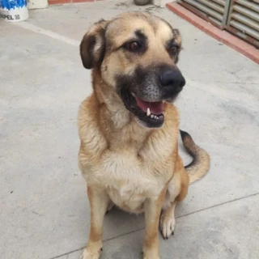

Luna 🌙
Chimbote, Perú
Mis datos
Especie: Perro
Edad: Cachorro
Peso: Mediano
Tamaño: Mediano
Sexo: Hembra
Nivel de actividad: Media
Tipo de pelo: Corto
쮺칩mo soy?
Carismática
Aprende rápido
Tierna
Le gusta correr
Me entregan
- Desparasitada
- Vacunada
- Con cartilla
- Esterilizada
Mi historia
Luna fue encontrada junto a sus hermanitos en una caja abandonada. Desde entonces ha sido cuidada por una familia temporal y está lista para tener un hogar definitivo donde la mimen como se merece.
쯈ui칠n me rescató?
Fui rescatada por Refugio Patita Feliz, quienes me protegieron desde que era muy pequeñita y me ayudaron a crecer feliz y saludable.